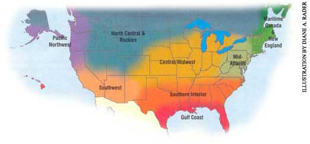
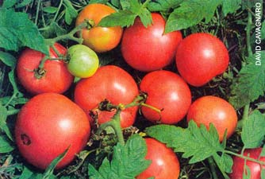
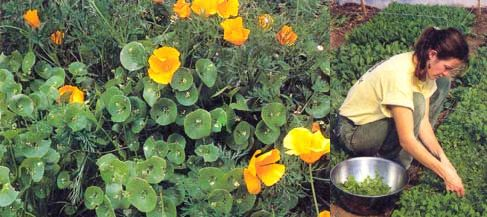

The days grow longer and the sun is slowly warming the ground, sending the first sweet s cents of spring into the air. Seed orders are arriving. It's time to sort the onions and make French onion soup with the soft and sprouted ones. Check your garlic, too: Soft cloves can be minced, mixed with olive oil and frozen for future use. In northern areas, start onions, leeks, celery and any slow-growing herbs or flowers, such as petunias and pansies. As the days warm, check for aphids in the greenhouse, especially on overwintered greens, such as kale and spinach. Control with sprays of insecticidal soap, neem or hot pepper wax before introducing tender young seedlings like peppers. Sowings of spinach, cilantro, lettuce and some oriental greens will germinate and begin to grow. Got cabin fever? Plan a community seed-and-seedling swap to share your extras.
Now is the time to be sure seeds are at hand and potting soil is ready to use. Indoors, start some lettuce, early brassicas (cabbage, broccoli and relatives), and bulb onions from seed. Follow in mid-February with the main-crop brassicas: peppers, eggplants, lettuce, celery, leeks and a few early tomatoes. In the garden under row covers, make successive plantings of spinach and radishes. Come March add peas, beets and carrots to the successions. Plant potatoes as soon as possible after St. Patrick's Day. As soon as they're in, it's time to start the main crop of tomatoes indoors. 'Eva Purple Ball' tomato is highly recommended for disease-resistant, blemish-free fruits with an incredible, old-fashioned flavor. Unfurl your hoses and plan your irrigation; be certain it's all in running order because a dry spring may be right around the corner.
The first days of spring are arriving across the South, but don't be fooled. More freezing temperatures can follow those tempting warm days. It's important to wait until after the last hard frost of the season (usually around the end of March) before moving tender seedlings out to the garden. If you must plant them earlier, be sure to use some type of protection, such as Wall O' Water insulating tipis. The careful planning you made in the winter months will pay huge dividends now. It can be tempting to get carried away and plant far more than originally planned. Choose items that grow best in your zone and the space you have available to maximize your enjoyment of your garden. Early-maturing new variety choices to speed up your harvest include `Blue Wonder' snap bean (ready in 55 days) and 'Magda' hybrid squash (45 days).
Finish planting cool-season vegetable transplants in early February. Then sit back and catch your breath for a week or two: This is the beginning of warm-season gardening, and one of the busiest times of the Southern garden year. Corn and snap beans can be planted as soon as danger of frost is past; for a continuous harvest, plant beans every two weeks through April. As nights get warmer, transplant tomatoes and other warm-season veggies. Enrich the planting hole with compost for long-term feeding and use manure tea or a liquid fish fertilizer for an immediate boost. Black plastic mulch will warm up the soil and allow earlier planting of heat-loving melons, okra and peppers. Divide perennials in February and prune evergreen shrubs. Wait to prune flowering shrubs until after bloom is finished. Fertilize ornamentals and trees with a compost mulch. Plant palms, tropical fruit and citrus trees in March.
'Eva Purple Ball' is a German heirloom tomato with incredible,
old-fashioned flavor. Seeds are available from Southern
Exposure Seed Exchange, (540) 894-9480.
To banish lingering snow, sprinkle it with a thin, heat-absorbing layer of clean firewood ash or dark mulch. It will melt away faster and give you a jump-start on cool-season veggie planting. Fruit trees and other woody plants should be trimmed now while daytime temperatures remain below freezing. In some municipalities it is illegal to trim oak trees past March due to concern about wilt diseases. It's time to start heat-loving veggies and slow-growing flowers indoors, but limit your enthusiasm according to the window and grow-light space you will have as the plants grow. New varieties to try: 'Black Magic Rose' geranium has unique, dark foliage edged with lime green, and hot pink blooms all summer. 'Fish pepper' is a pre-1870s African-American heirloom with white variegated leaves and 2- to 3-inch-long fruits.
While snow and cold weather linger through March outside, inside it's time to start flats of seedlings ready for trans planting when the soil finally warms. Start tomatoes extra-early only if you'll have time to move them into larger containers to prevent root growth from being stunted. Otherwise, wait until late March: A smaller tomato plant with growth momentum is better than a large, root-bound plant. As snow recedes in the garden, note the earliest melting spots. These sites maximize the growing seasons of cold mountain gardens by creating small, warm miniclimates. Even a small angle of slope to the south can dramatically increase soil warmth. Large rocks or concrete walls collect the sun's heat during the day and protect from frost at night. Tall-growing crops or permanent hedges will protect larger gardens and fields. An old Chinese saying: "Select a proper site for the garden and half the work is done."
When the rainy, gray weather is about to drive you insane, there is nothing more satisfying than getting flower, herb and vegetable seeds started indoors and knowing the warmth of the sun will soon be back to the Pacific Northwest. Early spring soils are often too wet to till, but you can still plant some cold-season seeds outside. For peas, simply scratch a 1-inch furrow into the soil, plant your pea seed and cover with soil. Plant lettuce, spinach and other greens directly into garden beds and protect from the elements with a cloche or row cover. For a spring cover crop to be tilled under in early summer, hand broadcast clover or Austrian field pea seed, and lightly rake it into the soil. Try 'Honey Gold' tomatoes this year for a tempting summer treat. It is a flavorful teardrop bunching tomato - nice and firm, but not overly sweet.
Start heat-loving veggies inside and wait to plant them outside until the nights are consistently above 50 degrees. An easy test is to take your shoes off and walk through your garden in the afternoon. If the soil is too cold for you, it is too cold for your summer crops. Along with other cold-season vegetables, try Miner's lettuce (Montia perfoliata), a shade-tolerant Western native with tender, funnel-shaped leaves, grown extensively in Europe as a commercial salad plant. Spread wheat straw mulch over your garden in February to keep weeds at bay. One bale will cover about 400 square feet. Just move the mulch aside when it's time to plant.
This time of year is heaven on earth for slugs and snails. An easy solution: a chicken for every one-third acre or less. They lay the most delicious eggs in spring-escargot-flavored!
Our thanks to the following for their contributions to the Almanac: Roberta Bailey, FEDCO Seeds , Waterville, Maine; Cricket Rakita, Southern Exposure Seed Exchange , Mineral, Virginia; Connie DamByl, William Dam Seeds , Dundas, Ontario; Matt Barthel, Seed Savers Exchange , Decorah, Iowa; Bill McDorman, Seeds Trust/High Altitude Gardens , Hailey, Idaho; Josh Kirschenbaum and Tom Johns, Territorial Seed Company , Cottage Grove, Oregon; Rose Marie Nichols McGee, Nichols Garden Nursery , Albany, Oregon; Craig and Sue Dremann, Redwood City Seed Co ., Redwood City, California; Dean Lollis, Park Seed Co. , Greenwood, South Carolina
|
 Above: Miner's lettuce growing with California poppies. Miner's lettuce is an easy-to-grow, cool-season salad crop. |
 |
 |